Rocinha: In the rain up to Rocinha, one of Brazil's largest favelas, on the hillside between Gávea and São Conrado. Around 70,000 people live here; the main means of transport are motorbike taxis. With a guide from the neighbourhood we walk through alleys full of street art, visit a capoeira group and stop at viewpoints where clouds hang over Rio's hills.
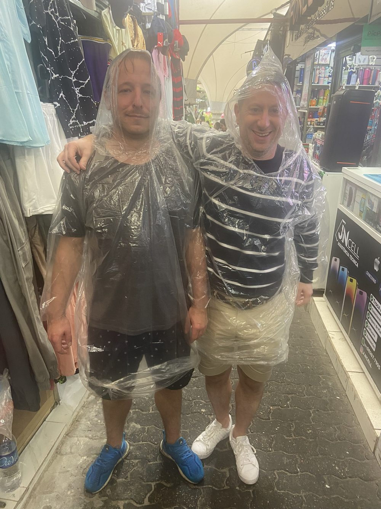
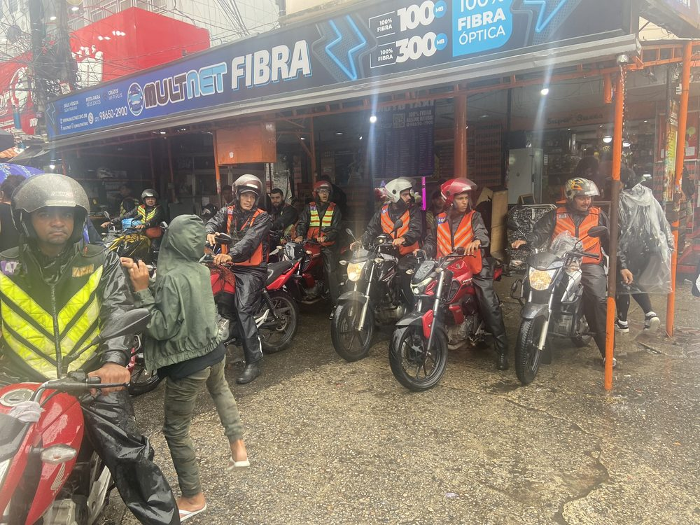
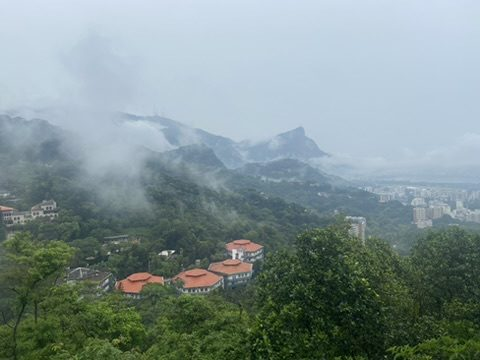
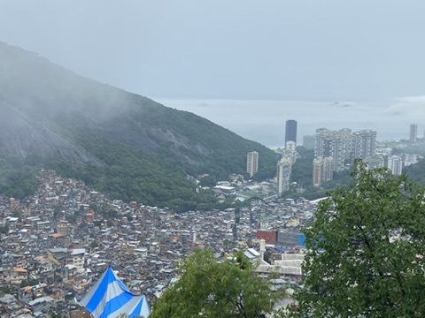
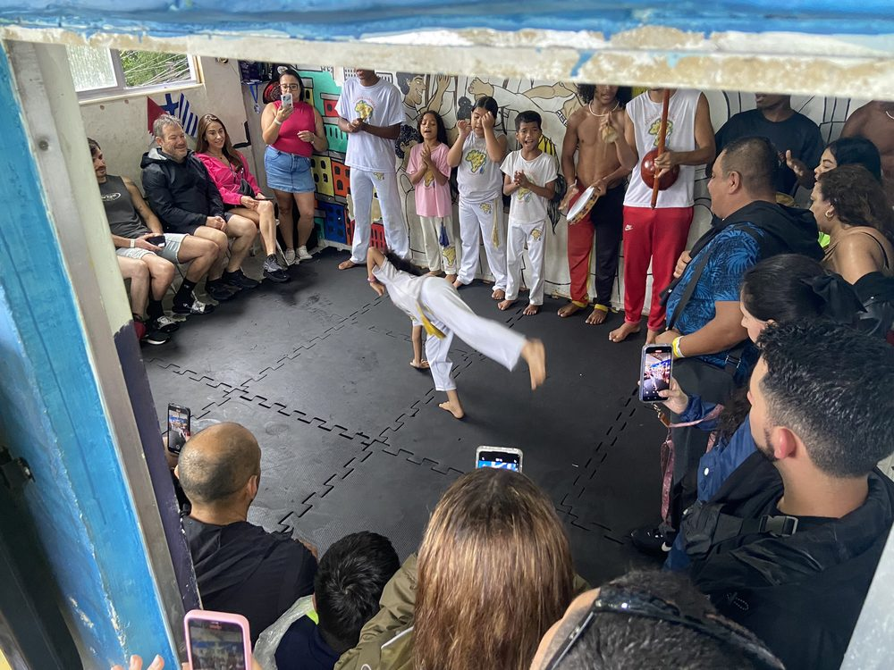
Capoeira, the mix of martial art, dance and music, has been on UNESCO's intangible heritage list since 2014.
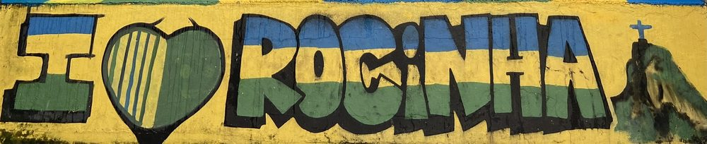
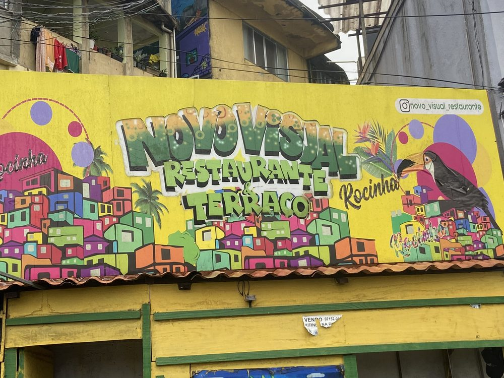
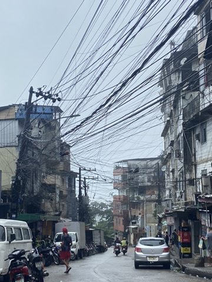
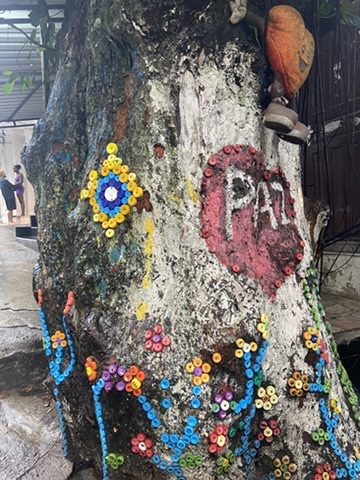
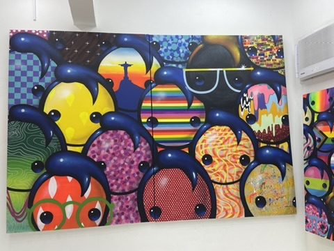
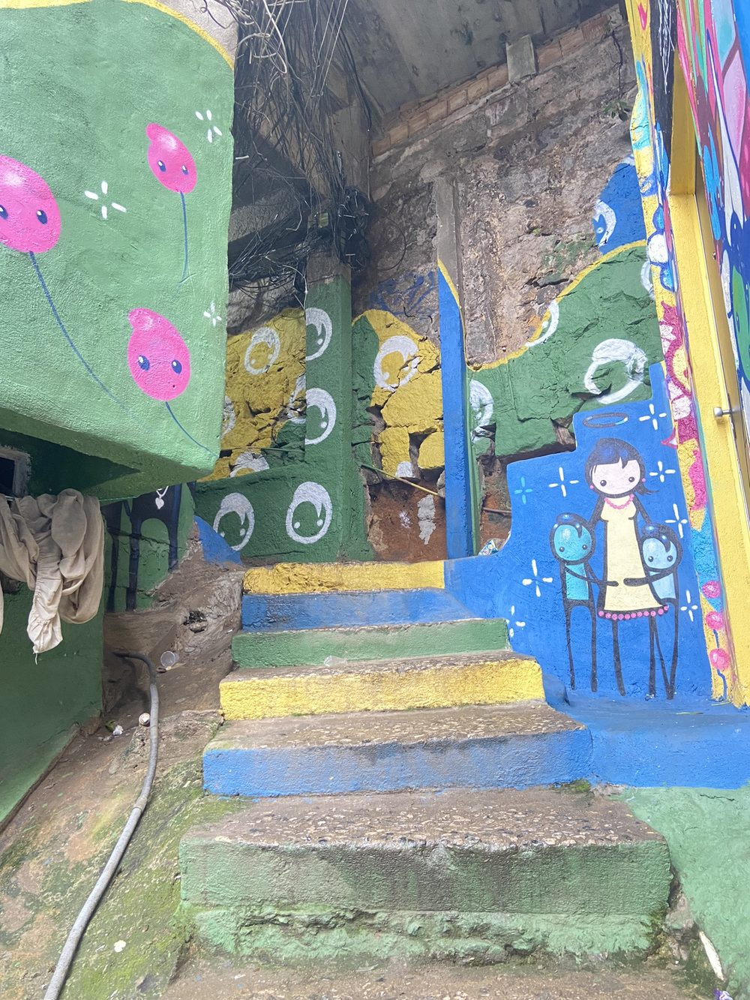
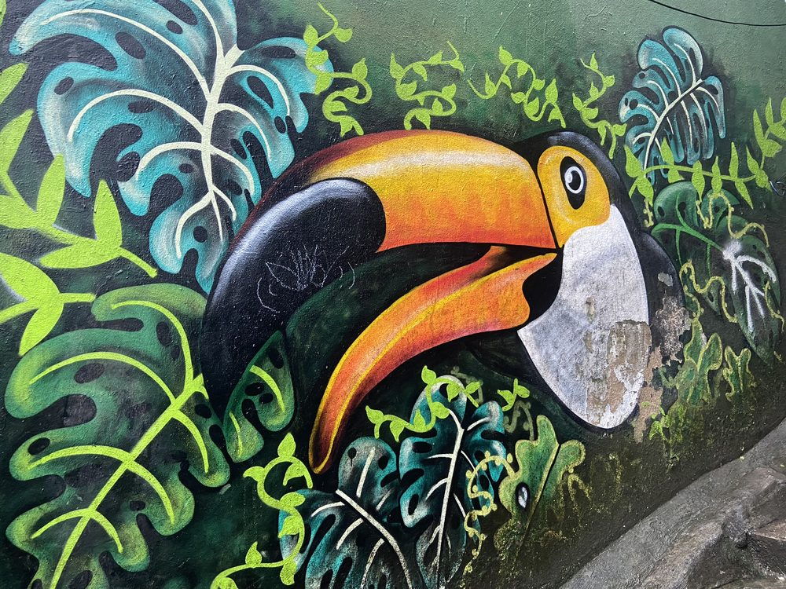
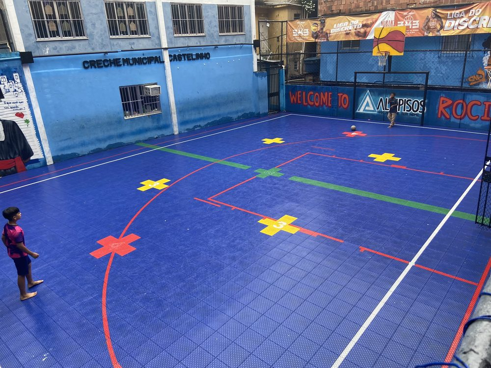
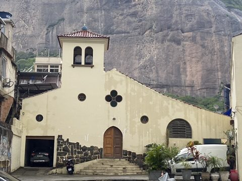
Evening in Lapa: Back in town: ceviche at the Peruvian place in Lapa.
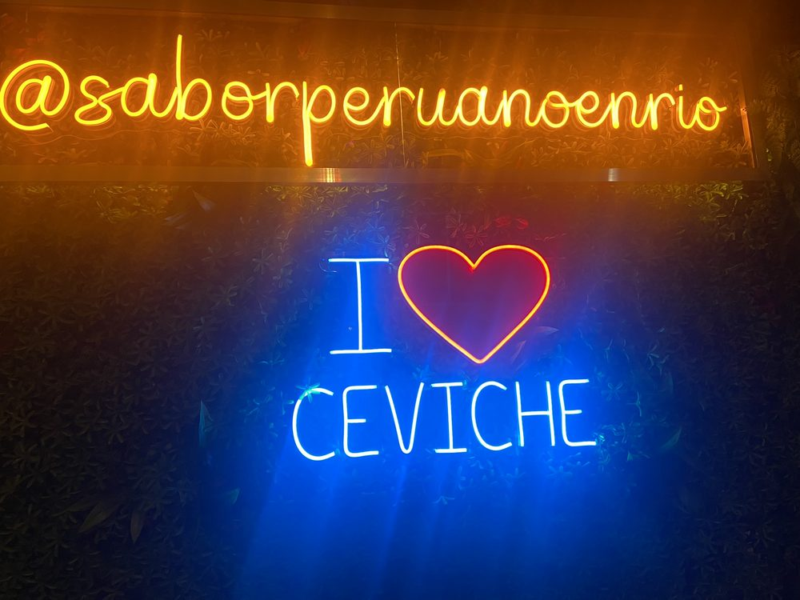